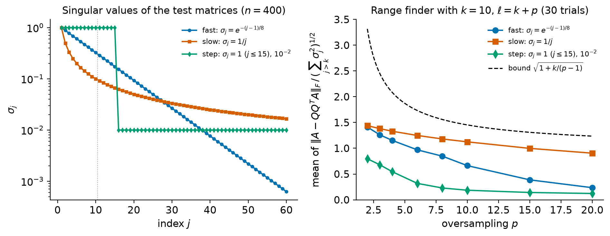
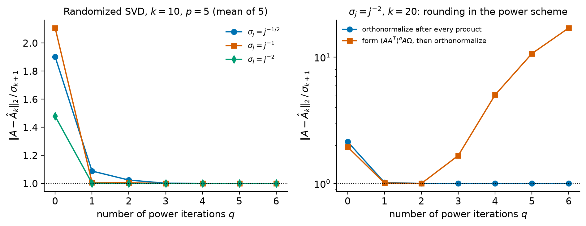
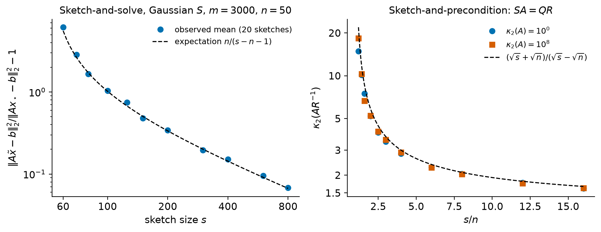

12. Randomized numerical linear algebra#
The algorithms of the previous chapters are deterministic and, with few exceptions, touch every entry of the matrix many times. A Householder QR factorization of \(A\in\R^{m\times n}\) costs \(2mn^2-\tfrac23n^3\) flops, and a dense SVD costs \(\bigO(mn\min(m,n))\) flops. For a matrix with \(m = 10^6\) rows and \(n = 10^3\) columns, QR alone is about \(2\times10^{12}\) flops, and the matrix has \(10^9\) entries, 8 GB in double precision. When a matrix is this large, the number of times the algorithm reads it from slow memory or from disk (the number of passes) can matter more than the flop count. In other applications the matrix is never stored at all: it is available only through a routine that returns \(Ax\) or \(A^Tx\), for instance because \(A\) is the solution operator of a differential equation or a product of several factors.
Randomized numerical linear algebra addresses these situations with a simple idea: multiply \(A\) by a random matrix with few columns (or rows), called a sketch or test matrix, and work with the much smaller product. A random linear map of a low-dimensional object into a moderately low-dimensional space preserves its geometry with high probability, and this is enough to find a near-optimal low-rank approximation or to precondition a least-squares problem. The benchmark for low-rank approximation is the Eckart–Young theorem of Chapter 2: no randomized algorithm can beat the truncated SVD, and the question is how close it can get and at what cost. The price of randomization is that guarantees hold in expectation or with high probability rather than always, and that two runs return different answers.
This chapter develops the three central tools: random embeddings (the Johnson–Lindenstrauss lemma and subspace embeddings), the randomized range finder and randomized SVD of Halko et al. [2011], and randomized least-squares solvers. The surveys by Drineas and Mahoney [2016] and Martinsson and Tropp [2020] are good companions throughout.
Learning objectives
After working through this chapter you should be able to:
explain when randomized algorithms are preferable to classical ones, in terms of flops, passes over the data and access to the matrix;
state and prove the concentration of the norm of a Gaussian sketch of a vector, and deduce a Johnson–Lindenstrauss lemma with explicit constants;
define subspace embeddings and relate them to the singular values of a sketched orthonormal basis;
implement the randomized range finder, the randomized SVD and randomized subspace iteration, and count their flops and passes;
prove the deterministic error bound for the range finder and the expected Frobenius-norm error bound for Gaussian test matrices, and state the corresponding spectral-norm bound;
explain why power iterations help for slowly decaying singular values and why they must re-orthonormalize in floating point;
analyze sketch-and-solve and sketch-and-precondition for least squares, and explain why only the second gives an accurate solution;
judge the limitations of randomized methods: the need for spectral decay, the loss of determinism, and the trade-off between accuracy and cost.
12.1. Why randomize?#
12.1.1. Three obstacles for classical algorithms#
We will meet three kinds of problems for which the algorithms of Chapter 7 to Chapter 10 are unsatisfactory.
Too many flops. A truncated SVD of rank \(k\) computed from a full dense SVD costs \(\bigO(mn\min(m,n))\) flops [Golub and Van Loan, 2013] (Section 8.6), however small \(k\) is. If the matrix is well approximated by a matrix of rank \(k\ll\min(m,n)\), we would like to pay something like \(\bigO(mnk)\), the cost of a few products of \(A\) with \(k\) vectors.
Too many passes. A Householder factorization reads and rewrites every column many times. If \(A\) is stored out of core, or is distributed over many machines, each pass is expensive. We want algorithms that read \(A\) a small, fixed number of times, independent of \(n\).
No access to entries. If \(A\) is available only as a black box that returns products \(AX\) and \(A^TX\) for blocks of vectors \(X\), algorithms that manipulate rows and columns do not apply at all. Krylov methods (Chapter 11) work in this setting, but they process one vector at a time. Randomized methods process blocks, which is efficient on modern hardware because blocks lead to level-3 BLAS operations (Chapter 1).
12.1.2. The benchmark: Eckart–Young#
Throughout, the singular values of \(A\in\R^{m\times n}\) are \(\sigma_1\ge\sigma_2\ge\dots\ge\sigma_{\min(m,n)}\ge0\), and \(A_k\) denotes the truncated SVD of rank \(k\). We recall the optimality result proved in Chapter 2.
Theorem 12.1 (Eckart–Young)
For \(0\le k<\min(m,n)\),
and both minima are attained by \(X = A_k\).
See Eckart and Young [1936] and Trefethen and Bau [1997] (Lecture 5). The theorem tells us what is achievable: a matrix admits an accurate low-rank approximation exactly when its singular values decay. It also gives the yardstick for every error bound below, which will have the form “randomized error \(\le\) modest factor \(\times\) optimal error”.
12.1.3. What a sketch is#
A random matrix \(\Omega\in\R^{n\times\ell}\) with \(\ell\ll n\) is used to compress \(A\) from the right, \(Y = A\Omega\in\R^{m\times\ell}\), or a random \(S\in\R^{s\times m}\) with \(s\ll m\) compresses it from the left, \(SA\). The columns of \(A\Omega\) are random linear combinations of the columns of \(A\), so they lie in \(\range(A)\); when \(A\) is close to a matrix of rank \(k\) and \(\ell\) is a little larger than \(k\), they capture the dominant part of \(\range(A)\). The most important example is the Gaussian matrix.
Definition 12.1 (Standard Gaussian matrix)
A random matrix \(G\in\R^{s\times d}\) is a standard Gaussian matrix if its entries are independent random variables with the standard normal distribution \(N(0,1)\).
Gaussian matrices are the easiest to analyze because of the following invariance.
Lemma 12.1 (Rotational invariance)
Let \(G\in\R^{s\times m}\) be a standard Gaussian matrix and let \(W = [W_1,\ W_2]\in\R^{m\times(d_1+d_2)}\) have orthonormal columns. Then \(GW_1\in\R^{s\times d_1}\) and \(GW_2\in\R^{s\times d_2}\) are independent standard Gaussian matrices.
Proof. The rows \(g_i^T\) of \(G\) are independent, and each \(g_i\) is a Gaussian vector with mean zero and covariance \(I_m\). A linear image of a Gaussian vector is Gaussian, so \(W^Tg_i\) is Gaussian with mean zero and covariance \(W^TI_mW = I_{d_1+d_2}\). Its entries are therefore independent \(N(0,1)\) variables, because uncorrelated jointly Gaussian variables are independent. The rows \(g_i^TW\), \(i = 1,\dots,s\), are independent because the \(g_i\) are. Hence \(GW = [GW_1,\ GW_2]\) has independent \(N(0,1)\) entries.
In words: a Gaussian sketch does not see the orientation of the subspace it is applied to. A second useful fact is that a Gaussian matrix has full rank with probability one: the set of \(r\times\ell\) matrices (\(r\le\ell\)) of rank less than \(r\) is the zero set of the sum of squares of all \(r\times r\) minors, a nonzero polynomial, and such a set has Lebesgue measure zero, so a distribution with a density assigns it probability zero.
12.2. Random embeddings and the Johnson–Lindenstrauss lemma#
12.2.1. Norms of sketched vectors#
We start with a single vector. Let \(S = G/\sqrt k\) with \(G\in\R^{k\times d}\) standard Gaussian. For a fixed \(x\ne0\), the scaled vector \(Gx/\|x\|_2\) is a standard Gaussian vector in \(\R^k\) (Lemma 12.1 with the single column \(W = x/\|x\|_2\)), so
has the \(\chi^2\) distribution with \(k\) degrees of freedom. Since \(\mathbb{E}z_i^2 = 1\), we get \(\mathbb{E}\|Sx\|_2^2 = \|x\|_2^2\): the sketch preserves squared norms on average. The key point is that it preserves them with high probability, with fluctuations of relative size about \(\sqrt{2/k}\) (Exercise 12.2) and exponentially small tails.
Lemma 12.2 (Concentration of the norm of a Gaussian sketch)
Let \(S = G/\sqrt k\) with \(G\in\R^{k\times d}\) standard Gaussian, let \(x\in\R^d\) be fixed and \(0<\varepsilon<1\). Then
Proof. We may assume \(x\neq 0\), and we write \(Z\) as above. For a single standard normal \(z\) and \(t<1/2\), \(\mathbb{E}e^{tz^2} = (1-2t)^{-1/2}\) (a Gaussian integral), so by independence \(\mathbb{E}e^{tZ} = (1-2t)^{-k/2}\).
Upper tail. For \(0<t<1/2\), Markov’s inequality applied to \(e^{tZ}\) gives
The choice \(t = \varepsilon/(2(1+\varepsilon))\) gives \(1-2t = 1/(1+\varepsilon)\) and the bound \(\exp\big(-\tfrac k2(\varepsilon-\ln(1+\varepsilon))\big)\). The inequality \(\ln(1+\varepsilon)\le\varepsilon-\varepsilon^2/2+\varepsilon^3/3\) for \(\varepsilon\ge0\) (both sides vanish at \(0\) and the derivative of the right-hand side minus the left-hand side is \(\varepsilon^3/(1+\varepsilon)\ge0\)) turns this into \(\exp\big(-k(\varepsilon^2/4-\varepsilon^3/6)\big)\).
Lower tail. For \(t>0\), Markov’s inequality applied to \(e^{-tZ}\) gives \(\mathbb{P}(Z\le(1-\varepsilon)k)\le e^{t(1-\varepsilon)k}(1+2t)^{-k/2}\). The choice \(t = \varepsilon/(2(1-\varepsilon))\) gives \(1+2t = 1/(1-\varepsilon)\) and the bound \(\exp\big(-\tfrac k2(-\varepsilon-\ln(1-\varepsilon))\big)\). Since \(-\ln(1-\varepsilon) = \varepsilon+\varepsilon^2/2+\varepsilon^3/3+\dots\ge \varepsilon+\varepsilon^2/2\), this is at most \(\exp(-k\varepsilon^2/4)\), which is smaller than the upper-tail bound.
Adding the two tails and using \(\varepsilon^2/4-\varepsilon^3/6 = \varepsilon^2(3-2\varepsilon)/12\) gives (12.2).
12.2.2. The Johnson–Lindenstrauss lemma#
A random map is unlikely to distort any one vector much. A union bound turns this into a statement about all the pairwise distances of a finite set.
Theorem 12.2 (Johnson–Lindenstrauss lemma)
There is an absolute constant \(C\) such that for every \(0<\varepsilon<1\), every \(N\ge2\) and every set of \(N\) points \(x_1,\dots,x_N\in\R^d\), if \(k\ge C\varepsilon^{-2}\ln N\) then there is a linear map \(f:\R^d\to\R^k\) with
Johnson and Lindenstrauss [1984] proved this, as a lemma in a paper on extensions of Lipschitz maps, with a random projection onto a \(k\)-dimensional subspace. The important feature is that \(k\) depends on the number of points and the accuracy but not on the ambient dimension \(d\). With a Gaussian map we can make the constant explicit and the statement constructive.
Theorem 12.3 (Johnson–Lindenstrauss with a Gaussian map)
Let \(x_1,\dots,x_N\in\R^d\), \(0<\varepsilon<1\), \(0<\delta<1\), and
If \(S = G/\sqrt k\) with \(G\in\R^{k\times d}\) standard Gaussian, then with probability at least \(1-\delta\) the map \(f(x) = Sx\) satisfies (12.3) for all pairs \(i,j\).
Proof. Apply Lemma 12.2 to each of the \(N(N-1)/2\) difference vectors \(x_i-x_j\); by linearity \(Sx_i - Sx_j = S(x_i-x_j)\). The probability that at least one of them violates (12.3) is at most the sum of the individual probabilities,
where the last inequality is the assumption on \(k\).
Letting \(\delta\to1\) shows that \(k\ge 24\ln N/(\varepsilon^2(3-2\varepsilon))\) suffices for existence, which proves Theorem 12.2 with an explicit constant.
Example 12.1 (How large must \(k\) be?)
For \(N = 1000\) points and \(\varepsilon = 0.1\), the existence bound is \(k\ge 24\ln(1000)/(0.01\cdot2.8)\approx5920.9\), so \(k = 5921\) suffices, and \(k\ge7895\) guarantees success with probability at least \(0.99\). These numbers are the same for points in \(\R^{10^4}\) and in \(\R^{10^9}\). They are useful only when \(d\) is much larger than \(k\): for \(d = 5000\) the “embedding” would increase the dimension. The dependence on \(\varepsilon\) is severe: halving \(\varepsilon\) roughly quadruples \(k\).
The Gaussian map costs \(2kd\) flops per point. The lab shows that for a random point set the union bound is only moderately pessimistic: the largest observed distortion is somewhat smaller than the guaranteed one, but of the same order. Faster maps with similar guarantees, using structured or sparse random matrices, are surveyed by Woodruff [2014] and Martinsson and Tropp [2020].
Warning
The Johnson–Lindenstrauss lemma is about a finite set of vectors fixed before \(S\) is drawn. No linear map \(\R^d\to\R^k\) with \(k<d\) preserves the norms of all vectors, because it has a nontrivial null space (Exercise 12.1). Likewise, the guarantee fails if the points are chosen after seeing \(S\), for instance adaptively by an algorithm that uses \(S\).
Check your understanding
Why does the embedding dimension in Theorem 12.3 not depend on \(d\), although \(S\) has \(d\) columns?
Answer. By rotational invariance, \(S(x_i-x_j)/\|x_i-x_j\|_2\) is distributed as \(G e_1/\sqrt k\) whatever the dimension \(d\) is: the sketch of a fixed unit vector is a \(k\)-dimensional standard Gaussian vector scaled by \(1/\sqrt k\). The only place where the problem enters is the number of vectors, \(N(N-1)/2\), in the union bound.
12.3. Subspace embeddings#
For linear algebra we need more than finitely many vectors: we want a sketch that preserves the norms of all vectors in a subspace, such as \(\range(A)\) for a tall matrix \(A\).
Definition 12.2 (Subspace embedding)
Let \(\mathcal V\subseteq\R^m\) be a subspace and \(0\le\varepsilon<1\). A matrix \(S\in\R^{s\times m}\) is an \(\varepsilon\)-subspace embedding for \(\mathcal V\) if
A random \(S\) is an oblivious subspace embedding for dimension \(d\) with failure probability \(\delta\) if, for every fixed subspace of dimension \(d\), (12.4) holds with probability at least \(1-\delta\).
“Oblivious” means that the distribution of \(S\) is chosen without looking at \(\mathcal V\); in algorithms, \(S\) is drawn without looking at \(A\).
Proposition 12.1 (Subspace embeddings and singular values)
Let \(U\in\R^{m\times d}\) have orthonormal columns and \(\mathcal V = \range(U)\). Then \(S\) is an \(\varepsilon\)-subspace embedding for \(\mathcal V\) if and only if all singular values of \(SU\in\R^{s\times d}\) lie in the interval \([\sqrt{1-\varepsilon},\ \sqrt{1+\varepsilon}]\). In particular this requires \(s\ge d\).
Proof. Every \(y\in\mathcal V\) is \(y = Uz\) with \(\|y\|_2^2 = z^TU^TUz = \|z\|_2^2\), so (12.4) says \(1-\varepsilon\le\|SUz\|_2^2/\|z\|_2^2\le1+\varepsilon\) for all \(z\ne0\). The extreme values of this Rayleigh quotient are \(\sigma_{\min}(SU)^2\) and \(\sigma_{\max}(SU)^2\). If \(s<d\), then \(SU\) has a nontrivial null space and \(\sigma_{\min}(SU) = 0\).
Gaussian embeddings. For \(S = G/\sqrt s\) with \(G\) standard Gaussian, Lemma 12.1 shows that \(SU\) is itself a standard Gaussian \(s\times d\) matrix divided by \(\sqrt s\), whatever the subspace. The quality of the embedding is therefore governed entirely by the extreme singular values of a rectangular Gaussian matrix. A classical result of random matrix theory states that these concentrate near \(\sqrt s\pm\sqrt d\), so that the singular values of \(SU\) lie close to the interval \([1-\sqrt{d/s},\ 1+\sqrt{d/s}]\) (see the discussion of Gaussian embeddings in Martinsson and Tropp [2020]); the lab confirms this numerically. Squaring, the distortion is \(\varepsilon\approx2\sqrt{d/s}\), so \(s\) of order \(d/\varepsilon^2\) rows are needed. A rigorous version, obtained by applying Lemma 12.2 to a finite net of the unit sphere of \(\mathcal V\), shows that \(s\) of order \((d+\ln(1/\delta))/\varepsilon^2\) suffices for failure probability \(\delta\) [Woodruff, 2014].
In practice the distortion need not be small. For preconditioning, an embedding with \(\varepsilon = 1/2\) is sufficient, and it is obtained with \(s\) a small multiple of \(d\).
Structured and sparse embeddings. Forming \(SA\) with a dense Gaussian \(S\) costs \(2smn\) flops for \(A\in\R^{m\times n}\), which for least squares is no cheaper than a QR factorization. Two families of sketches are much cheaper to apply [Martinsson and Tropp, 2020, Woodruff, 2014]:
Sketch |
Form |
Cost of forming \(SA\), \(A\) dense \(m\times n\) |
|---|---|---|
Gaussian |
\(G/\sqrt s\) |
\(2smn\) flops |
Subsampled randomized trigonometric transform (SRFT, SRHT) |
\(\sqrt{m/s}\,PFD\): random signs \(D\), a fast orthogonal transform \(F\) (Fourier, cosine or Hadamard), \(s\) sampled rows \(P\) |
\(\bigO(mn\log m)\) flops |
Sparse sign embedding (CountSketch when \(\zeta=1\)) |
\(\zeta\) nonzero entries \(\pm1/\sqrt\zeta\) in random positions of each column |
\(\bigO(\zeta\cdot\mathrm{nnz}(A))\) flops |
The fast transform mixes the rows so that no single row carries a large share of the information, after which uniform sampling works. Sparse embeddings cost time proportional to the number of nonzeros of \(A\), which is ideal for sparse data, but with only one nonzero per column they need \(s\) of order \(d^2\) rows; a few nonzeros per column bring \(s\) back to nearly linear in \(d\). Structured sketches need somewhat more rows than Gaussian ones for the same distortion, and their analysis is harder; in practice they behave much like Gaussian sketches [Halko et al., 2011, Martinsson and Tropp, 2020].
12.4. The randomized range finder and the randomized SVD#
12.4.1. Formulation#
Given \(A\in\R^{m\times n}\) and a target rank \(k\), we look for a matrix \(Q\in\R^{m\times\ell}\) with orthonormal columns, \(\ell\) slightly larger than \(k\), such that
This is the range-finding problem. Once \(Q\) is known, any factorization of \(A\) restricted to \(\range(Q)\) is cheap: with \(B = Q^TA\in\R^{\ell\times n}\) we have \(A\approx QB\), and an SVD of the small matrix \(B\) yields an approximate SVD of \(A\). This two-stage structure, random range finding followed by deterministic post-processing, is the framework of Halko et al. [2011] (Sections 4 and 5).
The range finder takes \(\ell = k+p\) random combinations of the columns of \(A\). The oversampling parameter \(p\) is a small integer such as 5 or 10; we will see that \(p\ge2\) is needed for the expected-error bound and that \(p\) between 5 and 10 is enough for a modest constant.
Algorithm 12.1 (Randomized range finder)
Input: \(A\in\R^{m\times n}\) (or routines for \(X\mapsto AX\) and \(X\mapsto A^TX\)), target rank \(k\), oversampling \(p\), with \(\ell = k+p\le\min(m,n)\).
Output: \(Q\in\R^{m\times\ell}\) with orthonormal columns.
Draw a standard Gaussian test matrix \(\Omega\in\R^{n\times\ell}\).
Form the sample matrix \(Y = A\Omega\).
Compute a thin QR factorization \(Y = QR\) (Householder QR, Chapter 7) and return \(Q\).
Algorithm 12.2 (Randomized SVD)
Input: \(A\in\R^{m\times n}\), target rank \(k\), oversampling \(p\), number of power iterations \(q\ge0\).
Output: \(U_k\in\R^{m\times k}\), \(\Sigma_k\in\R^{k\times k}\), \(V_k\in\R^{n\times k}\) with \(A\approx\widehat A_k = U_k\Sigma_kV_k^T\).
Compute \(Q\in\R^{m\times\ell}\) by Algorithm 12.1 (if \(q=0\)) or by Algorithm 12.3 (if \(q>0\)).
Form \(B = Q^TA\in\R^{\ell\times n}\).
Compute the thin SVD \(B = \widetilde U\,\widehat\Sigma\,\widehat V^T\).
Set \(U_k = Q\widetilde U(:,1{:}k)\), \(\Sigma_k = \widehat\Sigma(1{:}k,1{:}k)\) and \(V_k = \widehat V(:,1{:}k)\).
Cost. For a dense \(A\) and \(q = 0\), forming \(Y\) costs \(2mn\ell\) flops, the QR factorization \(\bigO(m\ell^2)\), forming \(B\) another \(2mn\ell\), the SVD of \(B\) \(\bigO(n\ell^2)\), and forming \(U_k\) \(2m\ell k\). The total is
and two passes over \(A\). When \(\ell\ll\min(m,n)\) this is much less than the \(\bigO(mn\min(m,n))\) of a dense SVD, and the dominant work consists of two matrix-matrix products, the most efficient operation on modern hardware (Section 1.1). For a matrix available only through products, the algorithm needs \(\ell\) products with \(A\) and \(\ell\) with \(A^T\), organized as two block products.
Exactness for low-rank matrices. The first theorem explains why the method works at all.
Proposition 12.2 (Exact recovery of low-rank matrices)
If \(\rank(A) = r\le\ell\), then with probability one the matrix \(Q\) of Algorithm 12.1 (computed in exact arithmetic) satisfies \(\range(A)\subseteq\range(Q)\), and hence \(A = QQ^TA\).
Proof. Write the thin SVD \(A = U_r\Sigma_rV_r^T\) with \(\Sigma_r\) invertible. Then \(Y = U_r\Sigma_r(V_r^T\Omega)\), and \(V_r^T\Omega\) is an \(r\times\ell\) standard Gaussian matrix by Lemma 12.1. It has full row rank \(r\) with probability one, so \(\range(Y) = \range(U_r) = \range(A)\). Since \(Y = QR\), \(\range(Y)\subseteq\range(Q)\). Hence \(QQ^T\) acts as the identity on \(\range(A)\), that is, \(QQ^TA = A\).
When \(\ell>r\), the columns of \(Q\) beyond the first \(r\) directions are determined by rounding errors; they do no harm. In floating point, the lab observes for a \(500\times300\) matrix of rank 15 a relative error \(\|A-QQ^TA\|_2/\|A\|_2\) at the level of rounding errors, a modest multiple of \(nu\).
12.4.2. Error analysis#
Real matrices are rarely of exactly low rank. We now bound the error \(\|(I-QQ^T)A\|\) in terms of the singular values. Let \(A = U\Sigma V^T\) be a full SVD and partition, for the target rank \(k\),
with \(\Sigma_1 = \diag(\sigma_1,\dots,\sigma_k)\) and \(\Sigma_2\) containing the remaining singular values. Note that \(\|\Sigma_2\|_2 = \sigma_{k+1}\) and \(\|\Sigma_2\|_F = (\sum_{j>k}\sigma_j^2)^{1/2}\) are the optimal errors of Theorem 12.1. The matrix \(\Omega_1\) measures how well the test matrix sees the dominant right singular vectors, and \(\Omega_2\) how much it picks up from the rest.
Theorem 12.4 (Deterministic error bound)
Let \(\Omega\in\R^{n\times\ell}\) be any matrix such that \(\Omega_1 = V_1^T\Omega\) has full row rank \(k\), let \(Y = A\Omega\), and let \(P_Y\) be the orthogonal projector onto \(\range(Y)\). Then, for both the 2-norm and the Frobenius norm,
where \(\Omega_1^\dagger = \Omega_1^T(\Omega_1\Omega_1^T)^{-1}\) is the pseudoinverse of \(\Omega_1\).
Proof. Let \(Z = Y\Omega_1^\dagger\in\R^{m\times k}\). Since \(\Omega_1\Omega_1^\dagger = I_k\),
Because \(\range(Z)\subseteq\range(Y)\), we have \((I-P_Y) = (I-P_Y)(I-P_Z)\), so \(\|(I-P_Y)A\|\le\|(I-P_Z)A\|\). For every \(W\), \((I-P_Z)A = (I-P_Z)(A-ZW)\) because \((I-P_Z)Z = 0\), and \(\|I-P_Z\|_2\le1\); hence \(\|(I-P_Z)A\|\le\|A-ZW\|\) in both norms (Theorem 1.5). Choose \(W = V_1^T\). Using \(A = U\begin{bmatrix}\Sigma_1V_1^T\\ \Sigma_2V_2^T\end{bmatrix}\),
By unitary invariance (Theorem 1.6) its norm is that of \([-F,\ \Sigma_2]\). In the Frobenius norm, \(\|[-F,\ \Sigma_2]\|_F^2 = \|F\|_F^2+\|\Sigma_2\|_F^2\). In the 2-norm, \(\|[-F,\ \Sigma_2]\|_2^2 = \|FF^T+\Sigma_2\Sigma_2^T\|_2\le\|F\|_2^2+\|\Sigma_2\|_2^2\).
This bound is the deterministic core of the analysis in Halko et al. [2011] (Section 9). It holds for any test matrix, random or not. It says that the range finder is nearly optimal as soon as \(\Omega_1\) is well conditioned (the test matrix “sees” all \(k\) dominant directions) and \(\Omega_2\) is not too large. A random test matrix achieves this with high probability.
Theorem 12.5 (Expected Frobenius error for Gaussian test matrices)
Let \(k\ge1\), \(p\ge2\) and \(\ell = k+p\le\min(m,n)\), let \(\Omega\in\R^{n\times\ell}\) be a standard Gaussian matrix, and let \(Q\) be an orthonormal basis of \(\range(A\Omega)\). Then
The second inequality is Theorem 10.5 of Halko et al. [2011] (stated there for \(k\ge2\)).
Proof. Since \(V = [V_1,\ V_2]\) is orthogonal, \(\Omega_1\) and \(\Omega_2\) are independent standard Gaussian matrices (Lemma 12.1, applied to \(\Omega^T\)). With probability one \(\Omega_1\) has full row rank, so Theorem 12.4 applies. Fix \(\Omega_1\) and average over \(\Omega_2\). For a standard Gaussian \(G\) and fixed \(M\), \(N\) we have \(\mathbb{E}\|MGN\|_F^2 = \|M\|_F^2\|N\|_F^2\) (Exercise 12.3), so
Next, \(\|\Omega_1^\dagger\|_F^2 = \trace\big((\Omega_1\Omega_1^T)^{-1}\big)\), and for a \(k\times(k+p)\) standard Gaussian matrix with \(p\ge2\) the mean of the inverse Wishart matrix \((\Omega_1\Omega_1^T)^{-1}\) is \(I_k/(p-1)\) [Halko et al., 2011] (Section 10). Hence \(\mathbb{E}\|\Omega_1^\dagger\|_F^2 = k/(p-1)\), and taking the expectation of (12.5) gives the first inequality. The second follows from \(\mathbb{E}X\le(\mathbb{E}X^2)^{1/2}\) (Jensen’s inequality).
The spectral-norm analysis is more involved; we state the result without proof.
Theorem 12.6 (Expected spectral error (Halko, Martinsson and Tropp))
Under the hypotheses of Theorem 12.5 with \(k\ge2\),
This is Theorem 10.6 of Halko et al. [2011], where one also finds tail bounds showing that large deviations above the expectation are extremely unlikely.
Interpretation. For \(k = 10\) the Frobenius factor \((1+k/(p-1))^{1/2}\) equals \(3.32\) for \(p = 2\), \(1.87\) for \(p = 5\) and \(1.45\) for \(p = 10\). Oversampling by a handful of columns multiplies the work only by \((k+p)/k\) and removes most of the gap to the optimum. The spectral bound has a second term: the Frobenius norm of the whole tail, which for slowly decaying singular values can be much larger than \(\sigma_{k+1}\). For example, for \(\sigma_j = 1/j\), \(j = 1,\dots,1000\), and \(k = 10\), the tail \((\sum_{j>10}\sigma_j^2)^{1/2}\approx0.307\) is about \(3.4\) times \(\sigma_{11}\approx0.0909\). The remedy is the power scheme of Section 12.5.
Warning
The bounds compare the rank-\(\ell\) matrix \(QQ^TA\), \(\ell = k+p\), with the best rank-\(k\) approximation, so the ratio can be smaller than one. Comparing the randomized method fairly with the truncated SVD requires truncating to rank \(k\), as in step 4 of Algorithm 12.2, and the following proposition controls what truncation costs.
Proposition 12.3 (Error of the truncated randomized SVD)
Let \(Q\in\R^{m\times\ell}\) have orthonormal columns, \(B = Q^TA\), let \(B_k\) be the truncated SVD of \(B\) of rank \(k\le\ell\), and \(\widehat A_k = QB_k\) (the output of Algorithm 12.2). Then \(\sigma_j(B)\le\sigma_j(A)\) for all \(j\), and
Proof. For any \(M\) with \(\|M\|_2\le1\) and any \(j\), Theorem 12.1 applied to \(MA\) gives \(\sigma_j(MA)\le\|MA - MA_{j-1}\|_2\le\|A-A_{j-1}\|_2 = \sigma_j(A)\); with \(M = Q^T\) this is the first claim. Now \(A-\widehat A_k = (I-QQ^T)A + Q(B-B_k)\). The columns of the first term are orthogonal to \(\range(Q)\) and those of the second lie in it, so the squared Frobenius norms add, and \(\|Q(B-B_k)\|_F = \|B-B_k\|_F\). By Eckart–Young for \(B\), \(\|B-B_k\|_F^2 = \sum_{j>k}\sigma_j(B)^2\le\sum_{j>k}\sigma_j(A)^2\) and \(\|B-B_k\|_2 = \sigma_{k+1}(B)\le\sigma_{k+1}(A)\). The 2-norm bound is the triangle inequality.
Combining Proposition 12.3 with Theorem 12.5 gives \(\mathbb{E}\|A-\widehat A_k\|_F^2\le(2+k/(p-1))\sum_{j>k}\sigma_j^2\). Sharper bounds for the truncated approximation exist [Martinsson and Tropp, 2020], and in practice the truncated error is usually much closer to optimal than this.
12.4.3. A worked example#
Example 12.2 (The range finder by hand)
Let
so \(\sigma_1 = 3\), \(\sigma_2 = 1\), and the best rank-one error is \(1\) in both norms. Take \(\ell = 1\) and the (non-random, for the sake of hand computation) test vector \(\omega\). Then \(y = A\omega = (3,1,0)^T\) and \(Q = y/\sqrt{10}\). A short computation gives, for any \(y = (a,1,0)^T\),
The error matrix \((I-P_y)A\) has rank one (its columns lie in the one-dimensional space \(\range(A)\cap y^\perp\)), so its 2-norm equals its Frobenius norm. With \(a = 3\) the error is \(\sqrt{18/10} = \sqrt{1.8}\approx1.342\), 34 percent above optimal: the test vector has a large component along the second right singular vector \(e_2\), which contaminates the sample.
One power iteration replaces \(y\) by \(AA^TA\omega = A\,\diag(9,1)\,\omega = (27,1,0)^T\), that is, \(a = 27\), and the error drops to \(\sqrt{738/730}\approx1.0055\). The contamination by \(e_2\) has been damped by the factor \((\sigma_2/\sigma_1)^2 = 1/9\) relative to \(e_1\).
12.4.4. The experiment#
Figure 12.1 shows the error of the range finder for three \(400\times400\) matrices with prescribed singular values and random singular vectors, averaged over 30 draws of \(\Omega\), as a function of \(p\) for \(k = 10\). All curves lie below the bound (12.6). The slowly decaying spectrum \(\sigma_j = 1/j\) is the hardest, and for it the bound exceeds the observed mean only by a small factor. For the fast and step spectra the rank-\((k+p)\) approximation beats the best rank-\(k\) approximation once \(p\) is moderately large, which illustrates the warning above. The lab repeats this experiment and also plots the error against \(k\).


Figure 12.1 Left: singular values of the test matrices. Right: mean of \(\|A-QQ^TA\|_F/\|\Sigma_2\|_F\) over 30 Gaussian test matrices with \(\ell = 10+p\) columns, and the bound of Theorem 12.5.#
Check your understanding
A matrix has exactly rank 5. You run Algorithm 12.1 with \(k = 5\) and \(p = 0\). What error do you expect in exact arithmetic? What changes if the matrix is the sum of a rank-5 matrix and a small full-rank perturbation?
Answer. In exact arithmetic the error is zero with probability one (Proposition 12.2): a \(5\times5\) Gaussian matrix is invertible with probability one. With a perturbation of size \(\eta\), the error is bounded by Theorem 12.4 in terms of \(\eta\|\Omega_2\Omega_1^{-1}\|\). A square Gaussian matrix is often badly conditioned, so \(\|\Omega_1^{-1}\|\) can be large, and indeed \(\mathbb{E}\|\Omega_1^\dagger\|_F^2\) is infinite for \(p\le1\). Oversampling by a few columns makes \(\Omega_1\) well conditioned with high probability.
12.5. Power iterations#
12.5.1. Motivation and algorithm#
When the singular values decay slowly, the tail term in (12.7) dominates and the range finder captures the dominant subspace poorly. The remedy is to apply the range finder to
which has the same singular vectors as \(A\) and singular values \(\sigma_j^{2q+1}\). The ratios \(\sigma_j/\sigma_1\) are raised to the power \(2q+1\), so the tail becomes negligible after a few iterations; this is the block version of the power method of Chapter 9, started from a random block. The worked example above is the case \(q = 1\).
Mathematically, \(\range\big((AA^T)^qA\Omega\big)\) could be computed by repeated multiplication followed by one QR factorization. Numerically this is a mistake. The columns of \((AA^T)^qA\Omega\) contain the component along the \(j\)th left singular vector with weight \(\sigma_j^{2q+1}\); once \((\sigma_j/\sigma_1)^{2q+1}\) is below about \(u\), that component is swamped by rounding errors in the dominant components, and it is lost. All directions with
are lost in this way. For \(q = 4\), \(u^{1/9}\approx0.0169\), so singular values just two orders of magnitude below \(\sigma_1\) are already out of reach. The cure is to orthonormalize after every multiplication, which keeps all directions at unit scale without changing the subspace in exact arithmetic (Exercise 12.6).
Algorithm 12.3 (Randomized subspace iteration)
Input: \(A\in\R^{m\times n}\), \(\ell = k+p\), number of iterations \(q\ge0\).
Output: \(Q\in\R^{m\times\ell}\) with orthonormal columns and, in exact arithmetic, \(\range(Q) = \range\big((AA^T)^qA\Omega\big)\).
Draw a standard Gaussian \(\Omega\in\R^{n\times\ell}\).
\(Q\leftarrow\) orthonormal factor of the thin QR factorization of \(A\Omega\).
For \(i = 1,\dots,q\):
\(W\leftarrow\) orthonormal factor of the thin QR factorization of \(A^TQ\).
\(Q\leftarrow\) orthonormal factor of the thin QR factorization of \(AW\).
Each iteration costs two products with \(A\) or \(A^T\) (\(4mn\ell\) flops) and two QR factorizations (\(\bigO((m+n)\ell^2)\) flops). The randomized SVD with \(q\) power iterations therefore costs about \(4(q+1)mn\ell\) flops and \(2q+2\) passes over \(A\). In the experiments of this chapter \(q = 1\) or \(2\) is enough to come within a few percent of the optimal error.
12.5.2. Error bound#
Corollary 12.1 (Power scheme)
Under the hypotheses of Theorem 12.6, let \(Q\) be computed by Algorithm 12.3 in exact arithmetic. Then
where \(C_{k,p} = 1+\sqrt{k/(p-1)}+(e\sqrt{k+p}/p)\sqrt{\min(m,n)-k}\).
Proof. Let \(P\) be the orthogonal projector \(QQ^T\). For every orthogonal projector, \(\|(I-P)A\|_2\le\|(I-P)(AA^T)^qA\|_2^{1/(2q+1)}\) [Halko et al., 2011] (Section 8). Since \(\range(Q) = \range(A^{(q)}\Omega)\), applying Theorem 12.6 to \(A^{(q)}\), whose singular values are \(\sigma_j^{2q+1}\), and using Jensen’s inequality \(\mathbb{E}X^{1/(2q+1)}\le(\mathbb{E}X)^{1/(2q+1)}\) for \(X\ge0\) gives the first inequality. The second follows from \(\sigma_j\le\sigma_{k+1}\) for \(j>k\).
The constant is driven to \(1\) exponentially fast in \(q\). For \(k = 10\), \(p = 5\) and \(\min(m,n) = 1000\), \(C_{k,p}\approx68.8\), and \(C_{k,p}^{1/(2q+1)}\approx4.10,\ 2.33,\ 1.83,\ 1.60\) for \(q = 1,2,3,4\). These are worst-case bounds; the observed errors are much closer to optimal, as Figure 12.2 shows.


Figure 12.2 Left: spectral-norm error of the rank-10 randomized SVD (\(p = 5\)) divided by \(\sigma_{11}\), for \(400\times400\) matrices with polynomially decaying singular values. Right: the same ratio for \(\sigma_j = j^{-2}\) and \(k = 20\), with Algorithm 12.3 and with the naive scheme that forms \((AA^T)^qA\Omega\) before orthonormalizing.#
The right panel of Figure 12.2 confirms the rounding analysis. The target is \(\sigma_{21}/\sigma_1 = 1/441\approx2.27\times10^{-3}\). The threshold \(u^{1/(2q+1)}\) is about \(6.4\times10^{-4}\) for \(q = 2\) and \(5.3\times10^{-3}\) for \(q = 3\), and the naive scheme fails from \(q = 3\) on, while the re-orthonormalized scheme stays at the optimal error.
Warning
Do not implement power iterations as Y = A @ (A.T @ Y) repeated \(q\) times
followed by a single QR factorization. In exact arithmetic this spans the
same subspace as Algorithm 12.3; in floating point
it discards every direction with \(\sigma_j/\sigma_1\) below about
\(u^{1/(2q+1)}\).
12.6. A posteriori error estimation and adaptivity#
The bounds above involve the unknown singular values. In practice one measures the error of a computed \(Q\) directly, using a few extra random vectors.
Proposition 12.4 (An unbiased error estimator)
Let \(Q\) have orthonormal columns and let \(\omega_1,\dots,\omega_r\in\R^n\) be independent standard Gaussian vectors, independent of \(Q\). Then
Proof. For a fixed matrix \(M\) and a standard Gaussian vector \(\omega\), \(\mathbb{E}\|M\omega\|_2^2 = \mathbb{E}\,\omega^TM^TM\omega = \trace(M^TM\,\mathbb{E}\omega\omega^T) = \trace(M^TM) = \|M\|_F^2\). Apply this with \(M = (I-QQ^T)A\), conditionally on \(Q\).
The estimator costs \(r\) extra products with \(A\). Its relative fluctuations are of order \(\sqrt{2/r}\) or smaller, so \(r = 10\) gives a useful estimate. For the spectral norm, Halko et al. [2011] (Section 4.3) show that
with probability at least \(1-10^{-r}\).
These estimators lead to an adaptive range finder for problems in which the rank needed for a tolerance \(\tau\) is not known in advance.
Algorithm 12.4 (Adaptive randomized range finder (blocked))
Input: \(A\in\R^{m\times n}\), tolerance \(\tau\), block size \(b\).
Output: \(Q\) with orthonormal columns and an estimate \(\|(I-QQ^T)A\|_F\lesssim\tau\).
\(Q\leftarrow\) empty \(m\times0\) matrix.
Repeat:
Draw a standard Gaussian \(\Omega\in\R^{n\times b}\) and set \(Y\leftarrow A\Omega - Q(Q^TA\Omega)\).
If \(\big(\|Y\|_F^2/b\big)^{1/2}\le\tau\), stop.
Orthogonalize \(Y\) against \(Q\) once more, compute its thin QR factorization \(Y = Q_{\text{new}}R\), and set \(Q\leftarrow[Q,\ Q_{\text{new}}]\).
The stopping test applies Proposition 12.4 to the fresh block, which is independent of the current \(Q\); the block is then reused to enlarge the basis, so the estimation costs nothing extra. The second orthogonalization in the last substep is needed because a single Gram–Schmidt pass loses orthogonality when \(Y\) is small compared with \(A\Omega\) (Chapter 7). Variants of this idea are discussed by Halko et al. [2011] and Martinsson and Tropp [2020].
12.7. Randomized least squares#
12.7.1. Setting#
Let \(A\in\R^{m\times n}\) with \(m\gg n\) have full column rank, let \(b\in\R^m\), and let \(x_\star\) be the least-squares solution with residual \(r_\star = b-Ax_\star\), which is orthogonal to \(\range(A)\) (Chapter 8). Householder QR solves the problem in \(2mn^2-\tfrac23n^3\) flops. Randomization offers two strategies.
12.7.2. Sketch-and-solve#
The first strategy replaces the problem by a smaller one: draw \(S\in\R^{s\times m}\) with \(n<s\ll m\) and compute
an \(s\times n\) least-squares problem that costs \(\bigO(sn^2)\) flops after the sketch has been applied. Sarlós [2006] introduced this approach and showed that, with a fast structured random projection, it produces a residual within a factor \(1+\varepsilon\) of the optimum with high probability, in asymptotically fewer operations than a QR factorization when \(m\gg n\). The following deterministic statement is the heart of such results.
Theorem 12.7 (Sketch-and-solve)
If \(S\) is an \(\varepsilon\)-subspace embedding for \(\range([A,\ b])\) and \(\tilde x\) is defined by (12.9), then
Proof. For every \(x\), \(Ax-b\in\range([A,\ b])\), a subspace of dimension at most \(n+1\). Using the embedding property twice and the optimality of \(\tilde x\) for the sketched problem,
For the second inequality write \(b-A\tilde x = r_\star+A(x_\star-\tilde x)\). Since \(r_\star\perp\range(A)\), the Pythagorean theorem gives \(\|b-A\tilde x\|_2^2 = \|r_\star\|_2^2+\|A(\tilde x-x_\star)\|_2^2\), hence \(\|A(\tilde x-x_\star)\|_2^2\le\big(\tfrac{1+\varepsilon}{1-\varepsilon}-1\big)\|r_\star\|_2^2 = \tfrac{2\varepsilon}{1-\varepsilon}\|r_\star\|_2^2\).
For \(\varepsilon\le1/\sqrt2\) the factor \(\sqrt{(1+\varepsilon)/(1-\varepsilon)}\) is at most \(1+2\varepsilon\). For Gaussian sketches the expected residual can be computed exactly.
Proposition 12.5 (Gaussian sketch-and-solve)
Let \(S = G/\sqrt s\) with \(G\in\R^{s\times m}\) standard Gaussian and \(s\ge n+2\). Then
Proof. If \(r_\star = 0\) then \(b\in\range(A)\), \(SA\) has full column rank with probability one, and \(\tilde x = x_\star\). Otherwise let \(A = UT\) with \(U\in\R^{m\times n}\) orthonormal and \(T\) invertible (a thin QR factorization), and \(w = r_\star/\|r_\star\|_2\), which is orthogonal to \(\range(U)\). By Lemma 12.1, \(G_1 = GU\) and \(g = Gw\) are an independent \(s\times n\) standard Gaussian matrix and standard Gaussian vector. With probability one \(G_1\) has full column rank, and since \(Sb = SAx_\star+Sr_\star\),
By the argument in the proof of Proposition 12.4, conditionally on \(G_1\) we have \(\mathbb{E}\|G_1^\dagger g\|_2^2 = \|G_1^\dagger\|_F^2\). Moreover \(\mathbb{E}\|G_1^\dagger\|_F^2 = \mathbb{E}\trace\big((G_1^TG_1)^{-1}\big) = n/(s-n-1)\) by the inverse Wishart mean used in the proof of Theorem 12.5 (with \(k = n\) and \(p = s-n\)). The Pythagorean identity from the previous proof completes the argument.
The result is independent of \(m\), of \(\kappa_2(A)\) and of \(b\). To obtain a root-mean-square residual within 10 percent of the optimum (\(1+n/(s-n-1) = 1.1^2 = 1.21\)) one needs \(s\approx 5.8n\); within 1 percent, \(s\approx 51n\). The left panel of Figure 12.3 confirms the formula.
Example 12.3 (Sketch-and-solve by hand)
Let \(A = (1,1,1)^T\) and \(b = (1,2,6)^T\). Then \(x_\star = 3\) (the mean of the entries of \(b\)), \(r_\star = (-2,-1,3)^T\) and \(\|r_\star\|_2^2 = 14\). Take the sketch
which adds the first two equations (a CountSketch without random signs). Then \(SA = (2,1)^T\), \(Sb = (3,6)^T\), and \(\tilde x = (SA)^T Sb/\|SA\|_2^2 = 12/5 = 2.4\). The residual is \(b-A\tilde x = (-1.4,-0.4,3.6)^T\) with \(\|b-A\tilde x\|_2^2 = 15.08\), a factor \(15.08/14\approx1.077\) above the optimum, and indeed \(15.08 = 14+3\cdot0.6^2 = \|r_\star\|_2^2+\|A(\tilde x-x_\star)\|_2^2\).
Warning
Sketch-and-solve controls the residual, not the solution. The second bound of Theorem 12.7 gives \(\|\tilde x-x_\star\|_2\le\sqrt{2\varepsilon/(1-\varepsilon)}\,\|r_\star\|_2/\sigma_n(A)\), which is small only if the residual is small or \(A\) is well conditioned. The error is set by the sketch, not by the unit roundoff: for a Gaussian sketch the proof of Proposition 12.5 gives \(\mathbb{E}\|A(\tilde x-x_\star)\|_2^2 = \tfrac{n}{s-n-1}\|r_\star\|_2^2\), so reducing it by a factor 10 requires about 100 times more rows. In the lab, sketch-and-solve on a problem with \(\kappa_2(A) = 10^6\) returns a residual within 10 percent of optimal and a solution that is completely wrong.
12.7.3. Sketch-and-precondition#
The second strategy uses the sketch only to build a preconditioner, and then solves the original problem to full accuracy with an iterative method [Avron et al., 2010, Rokhlin and Tygert, 2008]. Let \(SA = Q_SR\) be a thin QR factorization of the sketched matrix. The idea is that \(R\), the triangular factor of a matrix whose column space geometry mimics that of \(A\), nearly orthogonalizes \(A\).
Theorem 12.8 (Sketch-and-precondition)
If \(S\) is an \(\varepsilon\)-subspace embedding for \(\range(A)\) and \(SA = Q_SR\) is a thin QR factorization, then \(R\) is invertible and
Proof. If \(SAz = 0\) then \(\|Az\|_2^2\le\|SAz\|_2^2/(1-\varepsilon) = 0\), so \(z = 0\) because \(A\) has full column rank; hence \(SA\) has full column rank and \(R\) is invertible. For every \(y\), \(SAR^{-1}y = Q_Sy\) has norm \(\|y\|_2\), and \(AR^{-1}y\in\range(A)\), so
Thus \(\sigma_{\max}(AR^{-1})\le1/\sqrt{1-\varepsilon}\) and \(\sigma_{\min}(AR^{-1})\ge1/\sqrt{1+\varepsilon}\).
For Gaussian sketches the preconditioned matrix has an even simpler description.
Proposition 12.6 (Gaussian preconditioning is independent of \(A\))
Let \(A = UT\) with \(U\) orthonormal and \(T\) invertible, and let \(SA = Q_SR\). Then the singular values of \(AR^{-1}\) are the reciprocals of the singular values of \(SU\). In particular \(\kappa_2(AR^{-1}) = \kappa_2(SU)\), and for a Gaussian \(S\) its distribution does not depend on \(A\).
Proof. From \(SUT = Q_SR\) we get \(SU = Q_SM\) with \(M = RT^{-1}\) invertible, so the singular values of \(SU\) are those of \(M\). Moreover \(AR^{-1} = UTR^{-1} = UM^{-1}\), whose singular values are those of \(M^{-1}\). For Gaussian \(S\), \(\sqrt s\,SU\) is a standard Gaussian matrix by Lemma 12.1.
With the approximation \(\sigma(SU)\in[1-\sqrt{n/s},\ 1+\sqrt{n/s}]\) from Section 12.3, we expect \(\kappa_2(AR^{-1})\approx(\sqrt s+\sqrt n)/(\sqrt s-\sqrt n)\): about \(5.83\) for \(s = 2n\) and \(3\) for \(s = 4n\), whether \(\kappa_2(A)\) is \(1\) or \(10^{8}\). The right panel of Figure 12.3 confirms this.
We then solve \(\min_y\|AR^{-1}y-b\|_2\) by LSQR [Paige and Saunders, 1982], which is mathematically equivalent to the conjugate gradient method applied to the normal equations, and set \(x = R^{-1}y\). The conjugate gradient convergence bound (Chapter 11; Golub and Van Loan [2013], Chapter 11) applied to \((AR^{-1})^T(AR^{-1})\), whose condition number is \(\kappa^2\) with \(\kappa = \kappa_2(AR^{-1})\), gives for the iterates \(r^{(j)} = b-AR^{-1}y^{(j)}\)
With \(\kappa\le3\) the error is halved at every step, and about 40 iterations reduce it by \(10^{-12}\) (Exercise 12.8), independently of \(\kappa_2(A)\).
Algorithm 12.5 (Sketch-and-precondition with LSQR)
Input: \(A\in\R^{m\times n}\) of full column rank, \(b\in\R^m\), sketch size \(s\) (for example \(s = 4n\)), tolerance.
Output: an approximation \(x\) to \(x_\star\).
Draw a sketch \(S\in\R^{s\times m}\) (in practice an SRHT or a sparse sign embedding) and form \(SA\) and \(Sb\).
Compute the thin QR factorization \(SA = Q_SR\).
Compute the sketch-and-solve initial guess \(x^{(0)} = R^{-1}Q_S^T(Sb)\).
Apply LSQR to \(\min_y\|AR^{-1}y-(b-Ax^{(0)})\|_2\), applying \(AR^{-1}\) and its transpose by triangular solves and products with \(A\) and \(A^T\).
Return \(x = x^{(0)}+R^{-1}y\).
Cost. With an SRHT, step 1 costs \(\bigO(mn\log m)\) flops, step 2 \(2sn^2-\tfrac23n^3\), and each LSQR iteration about \(4mn+2n^2\) flops. The number of iterations depends only on the tolerance and on \(s/n\). For \(m\gg n\) the total, \(\bigO(mn\log m+n^3+mn\log(1/\text{tol}))\), is well below the \(2mn^2\) of Householder QR; Avron et al. [2010] reported that their implementation, Blendenpik, outperformed LAPACK’s direct least-squares solver on large, strongly overdetermined dense problems, and Rokhlin and Tygert [2008] analyze a closely related method based on the SRFT. With a dense Gaussian sketch, step 1 alone costs \(2smn\ge2mn^2\) flops, so a Gaussian sketch is useful for analysis and experiments but not for speed.
Accuracy. Unlike sketch-and-solve, sketch-and-precondition solves the original problem, so its accuracy is limited by the conditioning of the least-squares problem and by rounding errors rather than by the distortion of the sketch. In the lab, on a problem with \(\kappa_2(A) = 10^6\), its forward error lies below the first-order sensitivity \(\kappa_2(A)u+\kappa_2(A)^2u\,\|r_\star\|_2/(\|A\|_2\|x_\star\|_2)\) of the problem (Chapter 8), as does the error of Householder QR (which, in that experiment, is smaller by up to an order of magnitude), whereas sketch-and-solve with the same sketch size is wrong in every digit. The floating-point stability analysis of sketch-and-precondition is more delicate than that of QR, and implementation details such as the initial guess of step 3 matter.


Figure 12.3 Left: excess squared residual of Gaussian sketch-and-solve for \(m = 3000\), \(n = 50\) (mean of 20 sketches) and the expectation of Proposition 12.5. Right: \(\kappa_2(AR^{-1})\) for \(\kappa_2(A) = 1\) and \(\kappa_2(A) = 10^8\), and the approximation \((\sqrt s+\sqrt n)/(\sqrt s-\sqrt n)\).#
Check your understanding
Why is it not a good idea to improve a sketch-and-solve solution by “iterative refinement” with the same sketch, that is, by computing the correction \(d = \argmin_d\|S(Ad-(b-A\tilde x))\|_2\) and replacing \(\tilde x\) by \(\tilde x+d\)?
Answer. The correction is \(d = (SA)^\dagger S(b-A\tilde x) = (SA)^\dagger Sb-\tilde x\) because \((SA)^\dagger SA = I\). Hence \(\tilde x+d = (SA)^\dagger Sb = \tilde x\): the iteration is stuck at its starting point. The sketched problem has a different minimizer from the original one, and refinement with the same sketch converges to the former. Sketch-and-precondition avoids this by using \(S\) only in the preconditioner and computing residuals with the full matrix \(A\).
12.8. Randomized trace estimation#
Randomization also estimates scalar quantities of a matrix available only through products. The simplest is the trace.
Proposition 12.7 (Girard–Hutchinson estimator)
Let \(A\in\R^{n\times n}\) and let \(\omega_1,\dots,\omega_r\) be independent random vectors with \(\mathbb{E}\,\omega_i\omega_i^T = I\). Then \(T_r = \frac1r\sum_{i=1}^r\omega_i^TA\omega_i\) satisfies \(\mathbb{E}T_r = \trace(A)\). If \(A\) is symmetric, then \(\operatorname{Var}(T_r) = 2\|A\|_F^2/r\) when the \(\omega_i\) are standard Gaussian, and \(\operatorname{Var}(T_r) = \frac2r\big(\|A\|_F^2-\sum_ia_{ii}^2\big)\) when they have independent entries \(\pm1\) with equal probability (Rademacher vectors).
Proof. \(\mathbb{E}\,\omega^TA\omega = \mathbb{E}\trace(A\omega\omega^T) = \trace(A\,\mathbb{E}\omega\omega^T) = \trace(A)\). The variances are Exercise 12.9.
For a symmetric positive semidefinite \(A\) with eigenvalues \(\lambda_i\ge0\), \(\|A\|_F = (\sum\lambda_i^2)^{1/2}\le\sum\lambda_i = \trace(A)\), so the relative standard deviation of the Gaussian estimator is at most \(\sqrt{2/r}\). This is useful for a few digits (applications include \(\trace(A^{-1})\) and \(\log\det A = \trace(\log A)\), where each product requires a linear solve or a Krylov approximation) but expensive for many: every additional digit costs 100 times more samples. Variance-reduced estimators that combine Hutchinson’s idea with a randomized low-rank approximation are surveyed by Martinsson and Tropp [2020].
12.9. Limitations#
Randomized algorithms are not a universal replacement for the classical ones, and it is important to know when not to use them.
They need decay. The randomized SVD is compared against the Eckart–Young optimum, so it is only as useful as the best low-rank approximation. If the singular values do not decay, no rank-\(k\) approximation is accurate and the question of computing one efficiently is moot. If they decay slowly, power iterations are needed, which multiplies the number of passes by \(q+1\).
They give up determinism. Two runs give different answers unless the random seed is fixed; bitwise reproducibility across machines additionally requires the same random number generator and the same order of floating-point operations. Error guarantees hold in expectation or with a probability \(1-\delta\); the failure probabilities can be made extremely small, but not zero. Tests of randomized software must be statistical, as in the lab.
Accuracy costs more than approximation. Random embeddings give a distortion of order \((d/s)^{1/2}\), so sketch-based estimates converge at the Monte Carlo rate. Sketch-and-solve and trace estimation are therefore good for a few digits only. High accuracy requires using the randomness inside a convergent deterministic method, as in sketch-and-precondition or power iterations.
Constants and overheads matter. For small or moderately sized dense matrices (the \(512\times512\) image of the lab, for example), a dense SVD from LAPACK is fast, and the advantage of the randomized SVD in observed run time can be much smaller than the flop counts suggest. Structured sketches have larger constants than their \(\bigO\) bounds reveal, and Gaussian sketches make least-squares solvers slower, not faster.
12.10. Computational laboratory#
The lab notebook for this chapter implements the randomized
range finder, the randomized SVD and randomized subspace iteration from
scratch with a NumPy Generator, and verifies them with assertions derived
from Proposition 12.2, Proposition 12.3
and the Eckart–Young theorem. It compares their errors with the optimal
errors of the truncated SVD for matrices with fast, slow and step-like
singular value decay, as functions of the target rank, of the oversampling
parameter (against the bound (12.6)) and of the number of power
iterations, and reproduces the failure of the naive power scheme. It tests the
a posteriori error estimator and an adaptive range finder, applies the
randomized SVD to the “ascent” photograph and compares accuracy and observed
run time with the full SVD. Finally it measures pairwise distance distortion in
a Johnson–Lindenstrauss experiment, the singular values of sketched
orthonormal bases, the residual of sketch-and-solve against
Proposition 12.5, the condition number of \(AR^{-1}\)
and the accuracy of sketch-and-precondition with LSQR, and the variance of
the Hutchinson trace estimator.
12.11. Summary#
A random matrix with slightly more columns than the dimension of the object it acts on preserves that object’s geometry with high probability: the distances among \(N\) points with \(\bigO(\varepsilon^{-2}\ln N)\) rows (Johnson–Lindenstrauss), all vectors of a \(d\)-dimensional subspace with \(\bigO(d/\varepsilon^2)\) rows (subspace embeddings). Applied to low-rank approximation, this gives the randomized range finder: \(\ell = k+p\) random samples of the range of \(A\) and one QR factorization produce a basis whose error is, in expectation, within a factor \((1+k/(p-1))^{1/2}\) of the Eckart–Young optimum in the Frobenius norm, using two passes over \(A\) and about \(4mn\ell\) flops. Power iterations with re-orthonormalization handle slowly decaying spectra, a few extra samples estimate the error a posteriori, and a blocked adaptive scheme chooses the rank. For least squares, a sketch either yields a quick solution with a residual within a controlled factor of optimal (sketch-and-solve) or a triangular preconditioner that makes LSQR converge in a number of iterations independent of \(\kappa_2(A)\) (sketch-and-precondition), and only the latter gives an accurate solution.
12.12. Further reading#
Halko et al. [2011] is the standard reference for the randomized range finder and randomized SVD: Section 4 presents the range finders, power iterations, error estimation and structured test matrices, Section 5 the post-processing into factorizations, and Sections 9 and 10 the deterministic and probabilistic error analysis used in this chapter. Martinsson and Tropp [2020] is a comprehensive modern survey that covers embeddings, low-rank approximation, trace estimation and randomized solvers for linear systems and least squares. Woodruff [2014] develops subspace embeddings, including sparse ones, from the point of view of theoretical computer science, and Drineas and Mahoney [2016] give a short overview of the field. The original papers on randomized least squares are Sarlós [2006] (sketch-and-solve), Rokhlin and Tygert [2008] and Avron et al. [2010] (sketch-and-precondition), and the lemma of Johnson and Lindenstrauss [1984] started the theory of random embeddings. LSQR is described by Paige and Saunders [1982].
12.13. Exercises#
Exercise 12.1 (Concept: no linear map preserves all distances)
Show that for \(k<d\) no linear map \(f:\R^d\to\R^k\) satisfies \((1-\varepsilon)\|x\|_2^2\le\|f(x)\|_2^2\) for all \(x\in\R^d\), whatever \(\varepsilon<1\). Explain why this does not contradict Theorem 12.2, and deduce that a subspace embedding for a \(d\)-dimensional subspace must have at least \(d\) rows.
Solution to Exercise 12.1 (Concept: no linear map preserves all distances)
A linear map \(f(x) = Sx\) with \(S\in\R^{k\times d}\), \(k<d\), has rank at most \(k<d\), so there is \(x\ne0\) with \(Sx = 0\), and then \(\|f(x)\|_2^2 = 0<(1-\varepsilon)\|x\|_2^2\). The Johnson–Lindenstrauss lemma concerns only the finitely many vectors \(x_i-x_j\); a random \(S\) has a null space of dimension \(d-k\), but with high probability that null space (indeed, the set of directions that \(S\) shrinks by more than the factor \(1-\varepsilon\)) avoids all of these finitely many directions. For a \(d\)-dimensional subspace \(\mathcal V\) and \(S\in\R^{s\times m}\) with \(s<d\), the restriction of \(S\) to \(\mathcal V\) is a linear map from a \(d\)-dimensional space to \(\R^s\), which has a nonzero kernel by the same argument.
Exercise 12.2 (Theory: mean and variance of a sketched norm)
Let \(S = G/\sqrt k\) with \(G\in\R^{k\times d}\) standard Gaussian, and \(x\in\R^d\). Show that \(\mathbb{E}\|Sx\|_2^2 = \|x\|_2^2\) and \(\operatorname{Var}\|Sx\|_2^2 = 2\|x\|_2^4/k\). Use Chebyshev’s inequality to bound the probability in (12.2), and compare with the exponential bound for \(\varepsilon = 0.1\) and \(k = 1000\) and \(k = 5921\). Why would Chebyshev’s inequality be useless in the proof of Theorem 12.3 for \(N = 1000\)?
Solution to Exercise 12.2 (Theory: mean and variance of a sketched norm)
By Lemma 12.1, \(k\|Sx\|_2^2/\|x\|_2^2 = \sum_{i=1}^kz_i^2\) with independent \(z_i\sim N(0,1)\). Since \(\mathbb{E}z^2 = 1\) and \(\mathbb{E}z^4 = 3\), each \(z_i^2\) has mean \(1\) and variance \(2\), so the sum has mean \(k\) and variance \(2k\). Dividing by \(k\) and multiplying by \(\|x\|_2^2\) gives the claims. Chebyshev’s inequality gives \(\mathbb{P}(|\|Sx\|_2^2-\|x\|_2^2|\ge\varepsilon\|x\|_2^2)\le2/(k\varepsilon^2)\). For \(\varepsilon = 0.1\): with \(k = 1000\), Chebyshev gives \(0.2\) and (12.2) gives \(2e^{-7/3}\approx0.194\), about the same; with \(k = 5921\), Chebyshev gives \(0.0338\) but the exponential bound gives about \(2.0\times10^{-6}\). The union bound over \(N(N-1)/2\approx5\times10^5\) pairs needs a failure probability per pair below about \(1/N^2 = 10^{-6}\), which Chebyshev’s inequality delivers only for \(k\ge2N^2/\varepsilon^2 = 2\times10^8\). The exponential tail is what makes the logarithmic dependence on \(N\) possible.
Exercise 12.3 (Theory: Frobenius norms of Gaussian products)
Let \(G\in\R^{s\times t}\) be standard Gaussian and let \(M\in\R^{r\times s}\), \(N\in\R^{t\times q}\) be fixed. Show that \(\mathbb{E}\,G^TCG = \trace(C)\,I_t\) for every symmetric \(C\in\R^{s\times s}\), and deduce that \(\mathbb{E}\|MGN\|_F^2 = \|M\|_F^2\|N\|_F^2\). This fact was used in the proof of Theorem 12.5.
Exercise 12.4 (Theory: subspace embeddings and ranks)
Let \(S\) be an \(\varepsilon\)-subspace embedding for \(\range(A)\), with \(A\in\R^{m\times n}\) and \(\varepsilon<1\). Show that \(\nullsp(SA) = \nullsp(A)\) and hence \(\rank(SA) = \rank(A)\). Show also that \(\sqrt{1-\varepsilon}\,\sigma_j(A)\le\sigma_j(SA)\le\sqrt{1+\varepsilon}\,\sigma_j(A)\) for all \(j\). (Hint: use the minimax characterization \(\sigma_j(M) = \max_{\dim\mathcal W = j}\min_{0\ne z\in\mathcal W}\|Mz\|_2/\|z\|_2\).)
Exercise 12.5 (Computation: more power iterations by hand)
In Example 12.2, compute the sample vector and the error after \(q = 2\) power iterations. Show that after \(q\) iterations the error is \(\big(1+8/(9^{2q+1}+1)\big)^{1/2}\) and that the excess over the optimal error decreases asymptotically by the factor \((\sigma_1/\sigma_2)^4 = 81\) per iteration.
Solution to Exercise 12.5 (Computation: more power iterations by hand)
Since \(A^TA = \diag(9,1)\), after \(q\) iterations the sample is \(A(A^TA)^q\omega = A\,(9^q,1)^T = (3^{2q+1},1,0)^T\), so \(a = 3^{2q+1}\) in the formula of the example. For \(q = 2\), \(a = 243\) and the error is \(\sqrt{(243^2+9)/(243^2+1)} = \sqrt{59058/59050}\approx1.0000677\). In general \((a^2+9)/(a^2+1) = 1+8/(a^2+1)\) with \(a^2 = 9^{2q+1}\). The excess \(\sqrt{1+8/(a^2+1)}-1\approx4/a^2 = 4\cdot9^{-(2q+1)}\) is multiplied by \(9^{-2} = 1/81\) when \(q\) increases by one.
Exercise 12.6 (Theory: power iterations in exact and floating-point arithmetic)
(a) Show that, in exact arithmetic and provided all matrices involved have full column rank \(\ell\), Algorithm 12.3 produces a \(Q\) with \(\range(Q) = \range\big((AA^T)^qA\Omega\big)\). (b) Tabulate \(u^{1/(2q+1)}\) for \(q = 1,2,3,4\). For \(\sigma_j = j^{-2}\) and \(k = 20\), predict for which \(q\) the naive power scheme fails, and compare with Figure 12.2. (c) Explain why orthonormalizing after every product does not suffer from this loss.
Exercise 12.7 (Computation: flops and passes)
Let \(A\in\R^{10^4\times10^4}\) be dense, \(k = 100\), \(p = 10\) and \(q = 1\). Count the leading-order flops and the passes over \(A\) of Algorithm 12.2. Compare with the cost of reducing \(A\) to bidiagonal form by Householder transformations, \(4mn^2-\tfrac43n^3\) flops [Golub and Van Loan, 2013] (Section 5.4), which is the first phase of every dense SVD algorithm. Which quantity, flops or passes, is more relevant if \(A\) is stored on disk?
Exercise 12.8 (Computation: how many LSQR iterations?)
Using (12.10), find the number of LSQR iterations that guarantees \(\|r^{(j)}-r_\star\|_2\le10^{-12}\|r^{(0)}-r_\star\|_2\) when (a) \(\kappa_2(AR^{-1})\le3\) and (b) \(S\) is a \(\tfrac12\)-subspace embedding. Estimate the total flops of Algorithm 12.5 for \(m = 10^6\), \(n = 10^3\), \(s = 4n\) in case (a), ignoring the cost of the sketch, and compare with Householder QR.
Solution to Exercise 12.8 (Computation: how many LSQR iterations?)
(a) With \(\kappa\le3\), \((\kappa-1)/(\kappa+1)\le1/2\), and we need \(2\cdot2^{-j}\le10^{-12}\), that is \(j\ge\log_2(2\times10^{12})\approx40.9\), so 41 iterations. (b) By Theorem 12.8, \(\kappa\le\sqrt{1.5/0.5} = \sqrt3\), the rate is \((\sqrt3-1)/(\sqrt3+1) = 2-\sqrt3\approx0.268\), and \(j\ge \ln(2\times10^{12})/\ln(1/(2-\sqrt3))\approx21.5\), so 22 iterations suffice. For (a): the QR factorization of \(SA\) costs \(2sn^2-\tfrac23n^3\approx 7.3\times10^9\) flops, and 41 iterations at \(4mn+2n^2\approx4\times10^9\) flops cost about \(1.6\times10^{11}\) flops, for a total of about \(1.7\times10^{11}\), compared with \(2mn^2-\tfrac23n^3\approx2.0\times10^{12}\) for Householder QR, roughly a factor 12 fewer. With an SRHT the sketch adds \(\bigO(mn\log m)\) flops, of the order of \(2\times10^{10}\) times a modest constant.
Exercise 12.9 (Theory: variance of the Hutchinson estimator)
Prove the two variance formulas of Proposition 12.7. For which matrices is the Rademacher estimator exact with a single sample? Show that for a symmetric positive semidefinite \(A\) the Gaussian estimator satisfies \(\mathbb{P}(|T_r-\trace A|\ge t\,\trace A)\le2/(rt^2)\).
Exercise 12.10 (Theory: refinement with a fixed sketch)
(a) Show that if \(b\in\range(A)\) and \(SA\) has full column rank, then sketch-and-solve returns \(x_\star\) exactly. (b) Show that iterative refinement of sketch-and-solve with the same sketch cannot improve \(\tilde x\) (see the Check your understanding box in Section 12.7). (c) Now compute the correction from \(\min_d\|S_i(Ad-r^{(i)})\|_2\), \(r^{(i)} = b-Ax^{(i)}\), with a fresh independent Gaussian sketch \(S_i\) at every step. Show that \(x^{(i+1)}-x_\star\) does not depend on \(x^{(i)}\), and use Proposition 12.5 to compute \(\mathbb{E}\|A(x^{(i+1)}-x_\star)\|_2^2\). Does the iteration converge?
Exercise 12.11 (Computation: the adaptive range finder)
Implement Algorithm 12.4 with block size \(b = 10\) and apply it to the \(400\times400\) matrix with \(\sigma_j = 1/j\) of the lab for \(\tau = 0.5, 0.2, 0.1\). Compare the number of columns produced with the smallest rank \(k\) for which the optimal Frobenius error is at most \(\tau\). Explain the difference, and modify the algorithm so that it ends with a rank-\(k\) approximation whose error is at most \(\tau\) with high probability.
Exercise 12.12 (Project: low-rank approximation of an inverse)
Let \(L\in\R^{n\times n}\) be the tridiagonal matrix with \(2\) on the diagonal
and \(-1\) on the off-diagonals, \(n = 2000\). Compute a rank-10 approximation of
\(L^{-1}\) with the randomized SVD, accessing \(L^{-1}\) only through sparse
solves (factor \(L\) once with scipy.sparse.linalg.splu). Use the known
eigenvalues \(\lambda_j = 4\sin^2\big(j\pi/(2(n+1))\big)\) to compute the
optimal error, and study the ratio to the optimal error as a function of
\(q\) and \(p\). Report the cost in solves, and compare with computing the
eigenvalues of the dense inverse.
Exercise 12.13 (Project: a Blendenpik-style solver)
Implement Algorithm 12.5 with a sparse sign
embedding with \(\zeta = 8\) nonzeros per column (use scipy.sparse), and test
it on dense problems with \(m = 2\times10^5\), \(n = 200\) and
\(\kappa_2(A) = 10^{8}\). Measure \(\kappa_2(AR^{-1})\), the number of LSQR
iterations, the forward error, and the median run time for \(s = 2n, 4n, 8n\),
and compare with numpy.linalg.lstsq and with Householder QR. State which of
your observations depend on the machine.